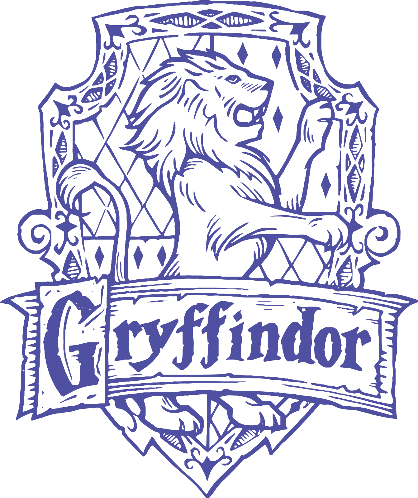
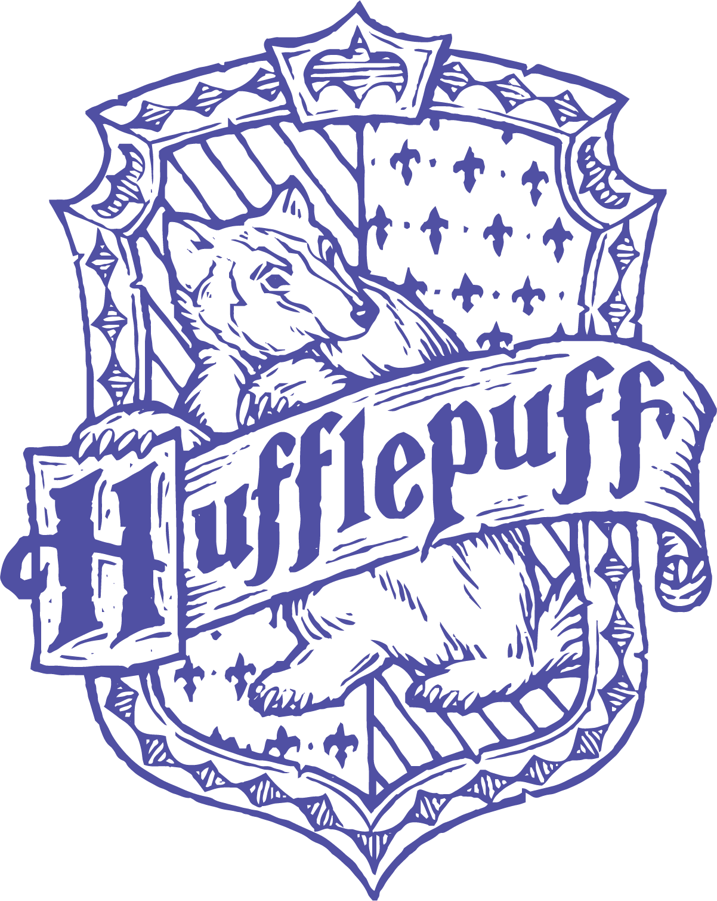
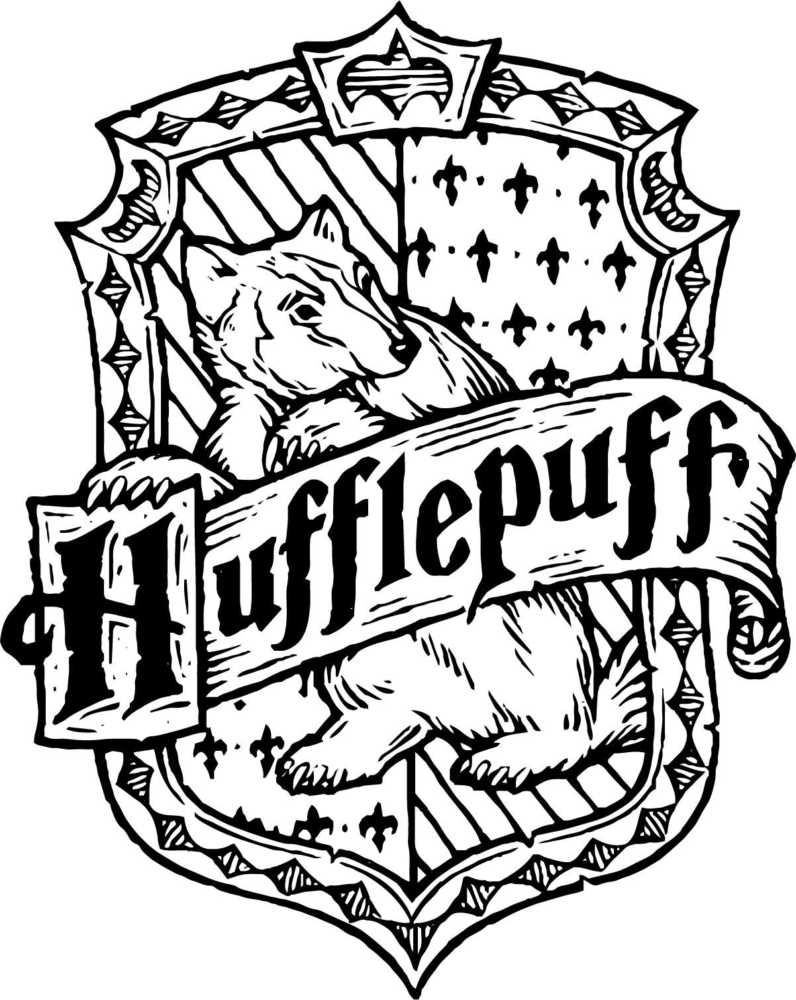
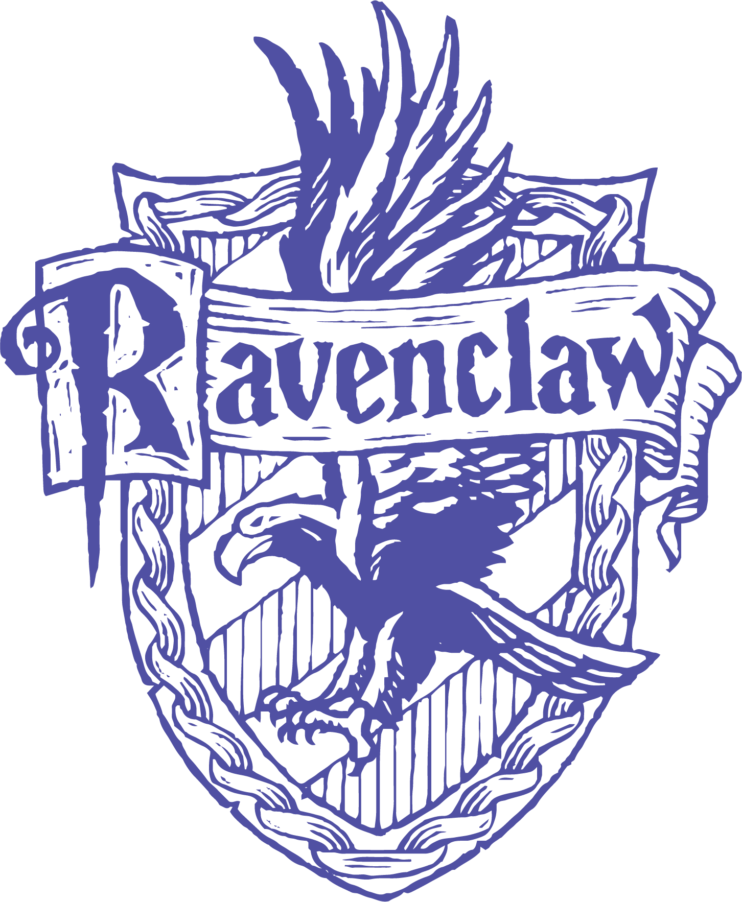
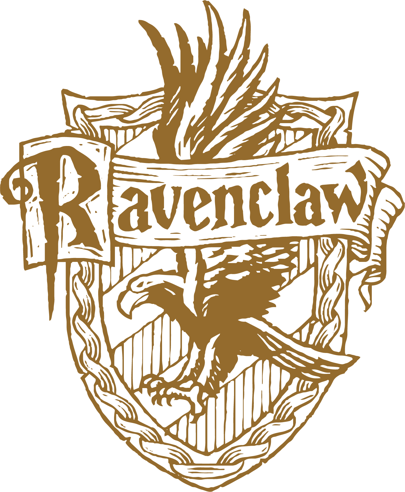
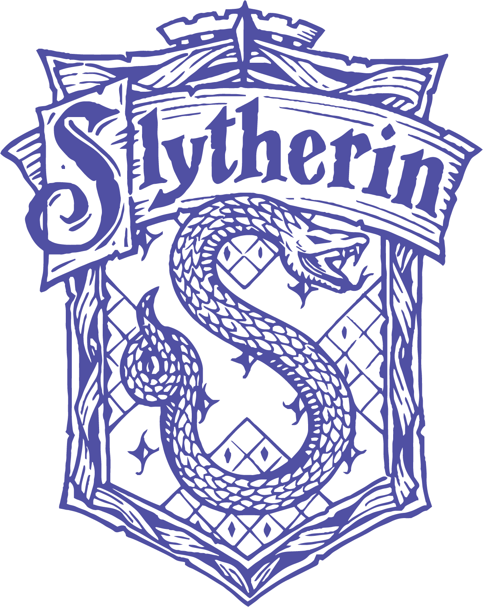
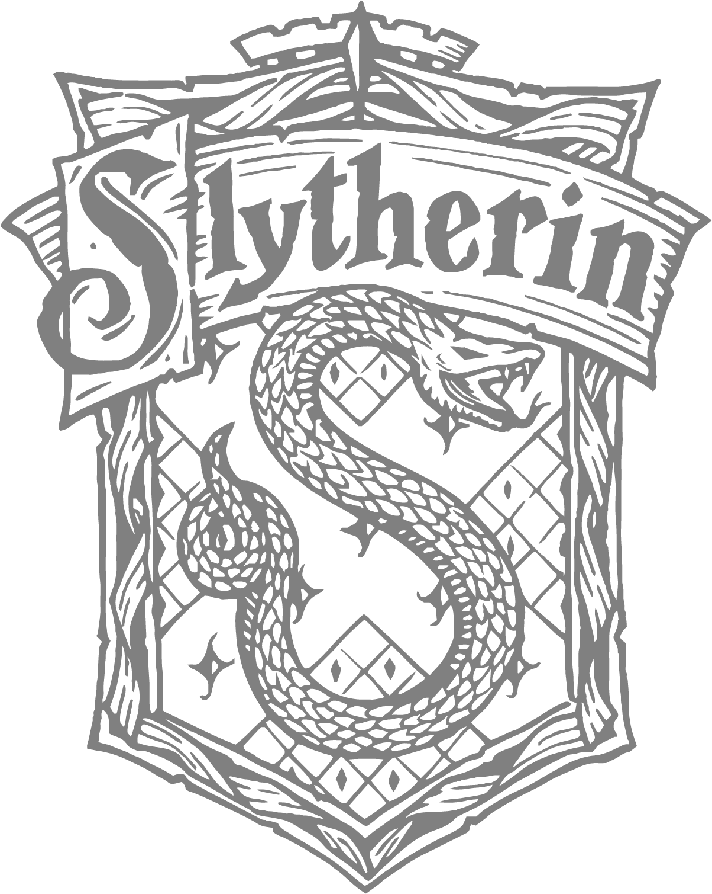

Draco dormiens nunquam titillandus
CASAS DE HOGWARTS
Proyecto de prueba realizado para pagina web orientada al mundo mágico de Harry Potter. Contiene información detallada sobre las míticas casas que componen la escuela de magia y hechicería Hogwarts. Como por ejemplo, datos sobre los fundadores de cada casa, sus lemas, su ubicación exacta, cada fantasma que las representa y magos famosos que fueron parte de cada una de ellas.

GRYFFINDOR
La casa de Gryffindor estima el coraje, así como la osadía, el temple y la caballerosidad, así, sus miembros se caracterizan por ser valientes aunque a veces hasta el punto de ser imprudentes.
INFO


HUFFLEPUFF
Los estudiantes de esta casa son conocidos por ser trabajadores, amigables, leales, humildes y sin prejuicios.
INFO


RAVENCLAW
La casa Ravenclaw premia el aprendizaje, la sabiduría, el ingenio, y el intelecto de sus miembros.
INFO


SLYTHERIN
Los Slytherin tienden a ser líderes ambiciosos, astutos y fuertes, orientados a los logros. También tienen sentidos altamente desarrollados de autopreservación.
INFO